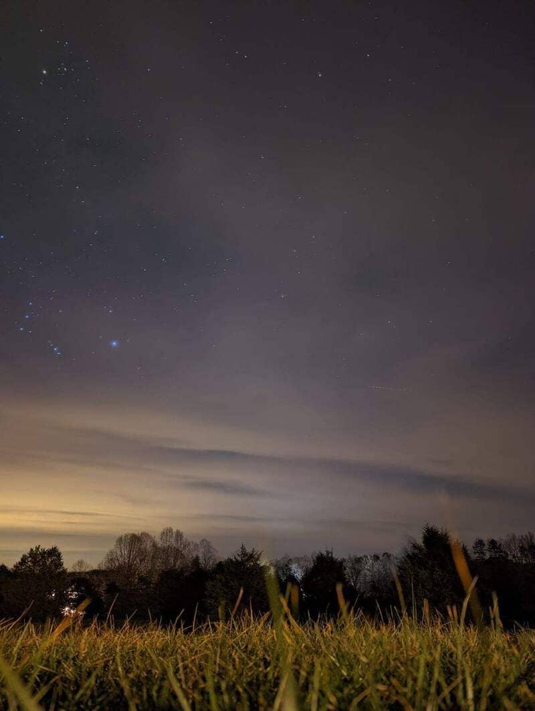

My astrophotography of a serene winter night captured in my backyard.More astrophotography of a shooting star streaking across the winter sky.

My astrophotohraphy set in a cloudy winter night revealing glimpses of stars. Created a personal HTML, CSS, JS project that creates a user-friendly signup page design for a fake coffee siteA personal HTML, JS, CSS project with an interactive etcha-sketch grid with color optionsSnapshot of my beloved grey and spotted white cats A touching poem from my upcoming poetry book I'm hoping to get published soon, set against a peaceful lake.My poem 'Heritage', that was published in the communit college literary magazine.An anniversary poem for my spouse that I designed and laser-engraved on acrylic. A compact yet powerful PC I built in a 8.5L case.